2．代数数与超越数
19世纪中叶，关于代数无理数与超越无理数的工作，是朝着更好地了解无理数的方向跨进的一步。代数无理数与超越无理数之间的区别在19世纪已经完成了（第25章第1节）。对于这个区别的兴趣通过19世纪关于方程的解的工作而大大提高了，因为这个工作揭示了这样的事实：并不是所有的代数无理数都可以通过对有理数进行代数运算而得到。再则，关于e和π究竟是代数数还是超越数的问题，继续吸引着数学家们的兴趣。
直到1844年前，是否存在任何超越数的问题还没有解决，在这一年，刘维尔(3)证明下述形式的任何一个数都是超越数：
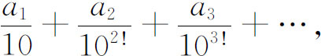
其中
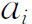
是从0到9的任意整数。要证明上述结论，刘维尔先证明了几个关于用有理数逼近代数无理数的定理。根据定义（第25章第1节），一个代数数是满足代数方程
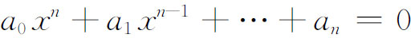
的任何一个实数或复数，其中
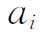
都是整数。一个根叫做n次代数数，是指它满足一个n次方程，但不满足低于n次的方程。有些代数数是有理数，它们都是一次的。刘维尔证明，如果p/q是一个n次代数无理数x的任一近似值，则存在一个正数M使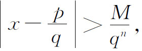
这里p与q＞1是整数。这表明，对于一个n次代数无理数的任一有理逼近p/q，其精度必定达不到
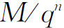
。换句话说，如果x是一个n次代数无理数，则必存在一个正数M使不等式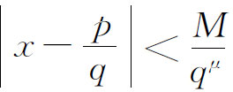
当μ＝n时p与q无整数解，从而当μ≤n时亦然。因此，对于一个固定的M，如果上述不等式对每一个正整数μ都有解p/q，则x是超越数。刘维尔证明他的那些无理数是满足上述最后的条件的，从而就证明了他的那些数都是超越数。
在识别特殊的超越数方面，其次跨进的一大步是1873年埃尔米特关于e是超越数的证明(4)。在得到这个结果以后，埃尔米特写信给博哈特（Carl Wilhelm Borchardt，1817—1880）说：“我不敢去试着证明π的超越性。如果其他人承担这项工作，对于他们的成功没有比我再高兴的人了，但请相信我，我亲爱的朋友，这必定会使他们花去一些力气。”
勒让德早曾猜测π是超越的（第25章第1节）。林德曼（Ferdinand Lindemann，1852—1939）在1882年(5)用实质上和埃尔米特没有什么差别的方法证明了这个猜测。林德曼指出，如果
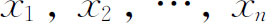
是不相同的代数数，实的或复的，而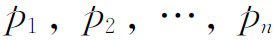
是不全为零的代数数，则和数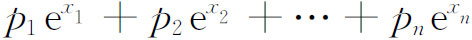
不能是0。如果我们取
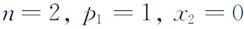
，则可见当x1是非零代数数时，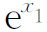
不能是代数数。由于x1可以取成1，e是超越数。现在已知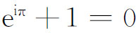
，从而数iπ不能是代数数。由于两个代数数的乘积是代数数，而i是代数数，所以π不是代数数。π是超越数的证明，解决了著名的几何作图问题的最后一个项目，因为所有可作出的数都是代数数。关于一个基本的常数仍是一个谜。欧拉常数（第20章第4节）
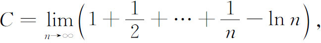
近似地是0.577-216，它在分析中，特别在Γ函数与ζ函数的研究中，起着重要作用，却至今不知道它是有理数还是无理数。